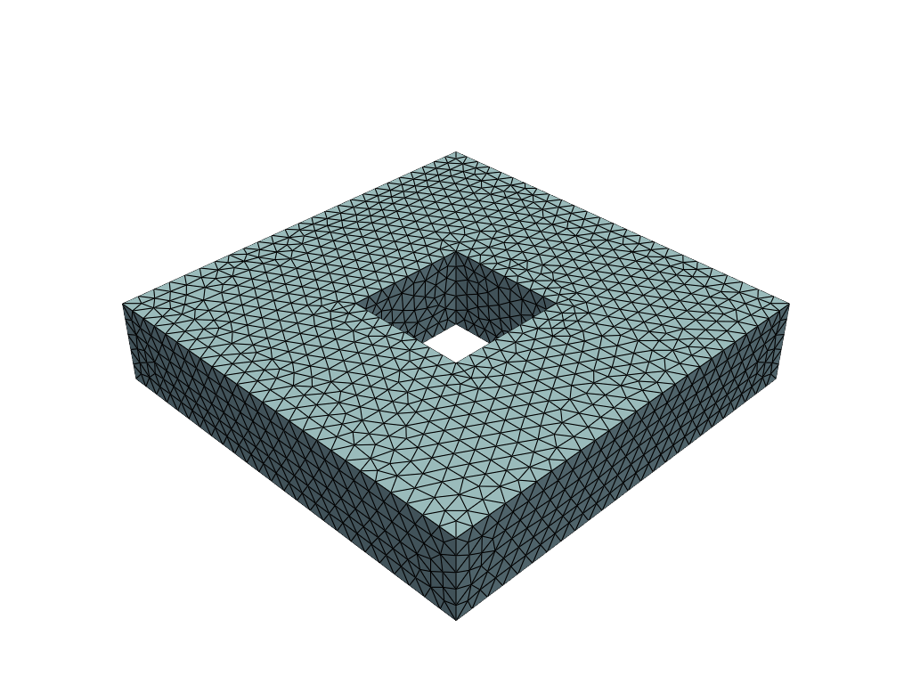
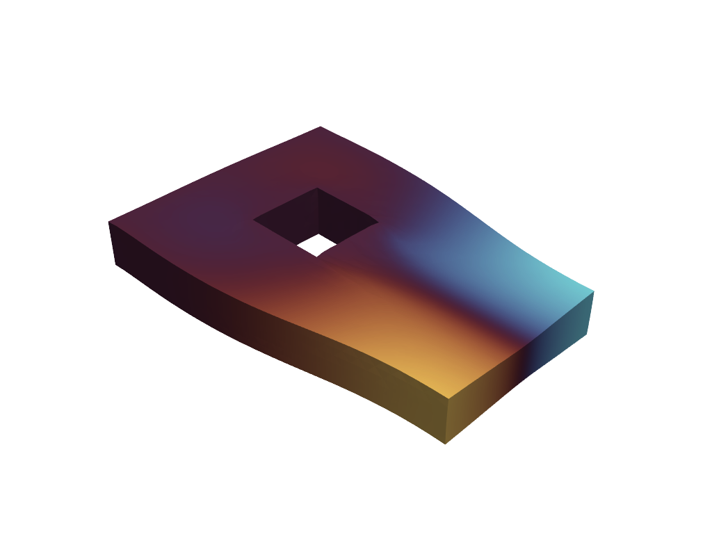

Neural Operator Element Method¤
Colab Setup (Install Dependencies)
# Only run this if we are in Google Colab
if 'google.colab' in str(get_ipython()):
print("Installing dependencies from pyproject.toml...")
# This installs the repo itself (and its dependencies)
!apt-get install gmsh
!apt-get install -qq xvfb libgl1-mesa-glx
!pip install pyvista -qq
!pip install -q "git+https://github.com/smec-ethz/tatva-docs.git"
import pyvista as pv
pv.global_theme.jupyter_backend = 'static'
pv.global_theme.notebook = True
pv.start_xvfb()
print("Installation complete!")
else:
import pyvista as pv
pv.global_theme.jupyter_backend = 'client'
In this notebook, we will implement a neural constitutive model. A neural constitutive model uses neural networks to represent the relationship between stress and strain in materials. This approach allows for more flexible and accurate modeling of complex material behaviors compared to traditional constitutive models.
import os
import jax
jax.config.update("jax_enable_x64", True) # Use double-precision for FEM stability
import equinox as eqx
import jax.experimental.sparse as jsp
import jax.numpy as jnp
import numpy as np
import pyvista as pv
import scipy.sparse as sp
from jax import Array
from jax_autovmap import autovmap
from tatva import Mesh, Operator, element, sparse
from tatva_coloring import distance2_color_and_seeds
Mesh and Material Setup¤
We start by defining the mesh and material properties for our simulation.
Mesh Generation
import gmsh
import meshio
def create_unstructured_3d_through_hole_mesh(
L=10.0, H=5.0, a=3.0, mesh_size=0.8, filename="noem_3d_hole.msh"
):
"""
Creates an unstructured tetrahedral mesh for a cuboid with a
through-hole along the Z-axis.
Parameters:
- L: Width/Length of the cuboid (X and Y).
- H: Height of the cuboid (Z-axis).
- a: Side of the square hole.
- mesh_size: Characteristic mesh size.
"""
gmsh.initialize()
gmsh.model.add("NOEM_ThroughHole")
occ = gmsh.model.occ
outer_vol = occ.addBox(-L / 2, -L / 2, 0, L, L, H)
cutter_vol = occ.addBox(-a / 2, -a / 2, -0.1, a, a, H + 0.2)
fem_vol, _ = occ.cut([(3, outer_vol)], [(3, cutter_vol)])
occ.synchronize()
all_surfaces = gmsh.model.getEntities(2)
interface_surfaces = []
for dim, tag in all_surfaces:
mass_prop = occ.getCenterOfMass(dim, tag)
# Check if surface is on the internal walls (x or y = +/- a/2)
is_internal_x = (
np.isclose(np.abs(mass_prop[0]), a / 2, atol=1e-3)
and np.abs(mass_prop[1]) <= a / 2
)
is_internal_y = (
np.isclose(np.abs(mass_prop[1]), a / 2, atol=1e-3)
and np.abs(mass_prop[0]) <= a / 2
)
# Ensure it's not the top or bottom cap of the cuboid
is_not_cap = not np.isclose(mass_prop[2], 0, atol=1e-3) and not np.isclose(
mass_prop[2], H, atol=1e-3
)
if (is_internal_x or is_internal_y) and is_not_cap:
interface_surfaces.append(tag)
gmsh.model.addPhysicalGroup(3, [fem_vol[0][1]], name="FEM_Volume")
gmsh.model.addPhysicalGroup(2, interface_surfaces, name="Interface")
gmsh.option.setNumber("Mesh.MeshSizeMin", mesh_size)
gmsh.option.setNumber("Mesh.MeshSizeMax", mesh_size)
gmsh.model.mesh.generate(3)
gmsh.write(filename)
gmsh.finalize()
mesh = meshio.read(filename)
nodes = mesh.points
fem_elements = mesh.cells_dict["tetra"]
if "Interface" in mesh.cell_sets_dict:
# Get the triangles forming the internal boundary
interface_tris = mesh.cells_dict["triangle"][
mesh.cell_sets_dict["Interface"]["triangle"]
]
interface_node_ids = np.unique(interface_tris)
else:
interface_node_ids = np.unique(mesh.cells_dict["triangle"])
if os.path.exists(filename):
os.remove(filename)
return nodes, fem_elements, interface_node_ids
def get_pyvista_grid(mesh, cell_type="quad"):
if mesh.coords.shape[1] == 2:
pv_points = np.hstack((mesh.coords, np.zeros(shape=(mesh.coords.shape[0], 1))))
else:
pv_points = np.array(mesh.coords)
cell_type_dict = {
"quad": 4,
"triangle": 3,
"tetra": 4,
"hexahedron": 8,
}
pv_cells = np.hstack(
(
np.full(
fill_value=cell_type_dict[cell_type], shape=(mesh.elements.shape[0], 1)
),
mesh.elements,
)
)
pv_cell_type_dict = {
"quad": pv.CellType.QUAD,
"triangle": pv.CellType.TRIANGLE,
"tetra": pv.CellType.TETRA,
"hexahedron": pv.CellType.HEXAHEDRON,
}
cell_types = np.full(
fill_value=pv_cell_type_dict[cell_type], shape=(mesh.elements.shape[0],)
)
grid = pv.UnstructuredGrid(pv_cells.flatten(), cell_types, pv_points)
return grid
nodes, elements, interface_idx = create_unstructured_3d_through_hole_mesh(
L=10.0, H=2.0, a=a, mesh_size=0.4
)
mesh = Mesh(coords=nodes, elements=elements)
n_dofs_per_node = 3
n_nodes = mesh.coords.shape[0]
n_dofs = n_dofs_per_node * n_nodes
grid = get_pyvista_grid(mesh, cell_type="tetra")
pl = pv.Plotter()
pl.add_mesh(grid, show_edges=True)
pl.show()

We define a simple 3D bar of length \(L\), width \(W\), and height \(H\). The bar isfixed at one end and subjected to a force at the other end. We use Tetrahedral elements for the mesh.
tetra = element.Tetrahedron4()
op = Operator(mesh, tetra)
n_dofs_per_node = 3
n_nodes, n_dofs = mesh.coords.shape[0], mesh.coords.shape[0] * n_dofs_per_node
Defining FEM energy functional¤
from typing import NamedTuple
class Material(NamedTuple):
"""Material properties for the elasticity operator."""
mu: float # Diffusion coefficient
lmbda: float # Diffusion coefficient
E = 1e4
nu = 0.3
mu = E / 2 / (1 + nu)
lmbda = E * nu / (1 - 2 * nu) / (1 + nu)
mat = Material(mu=mu, lmbda=lmbda)
@autovmap(grad_u=2)
def compute_strain(grad_u):
return 0.5 * (grad_u + grad_u.T)
@autovmap(eps=2, mu=0, lmbda=0)
def compute_stress(eps, mu, lmbda):
I = jnp.eye(3)
return 2 * mu * eps + lmbda * jnp.trace(eps) * I
@autovmap(grad_u=2, mu=0, lmbda=0)
def strain_energy(grad_u, mu, lmbda):
eps = compute_strain(grad_u)
sigma = compute_stress(eps, mu, lmbda)
return 0.5 * jnp.einsum("ij,ij->", sigma, eps)
@jax.jit
def total_fem_energy(u_flat: Array) -> float:
"""Compute the total energy of the system."""
u = u_flat.reshape(-1, n_dofs_per_node)
u_grad = op.grad(u)
energy_density = strain_energy(u_grad, mat.mu, mat.lmbda)
return op.integrate(energy_density)
Defining the Neural Constitutive Model¤
The specific architecture employed for the neural strain energy density was a feed-forward Multi-Layer Perceptron (MLP). The network consisted of an input layer accepting the two scalar invariants \((I_1, J)\), followed by two hidden layers with 16 neurons each, and a final output layer producing the scalar energy value. To ensure that the second-order derivatives (Hessian) remained continuous and numerically stable, a \texttt{softplus} activation function was utilized across all hidden layers. This choice is critical as standard piecewise linear activations, such as \texttt{ReLU}, yield zero second derivatives almost everywhere, leading to immediate solver divergence.
class NeuralInclusion(eqx.Module):
network: eqx.nn.MLP
stiffness_prior: float # Helps with initial convergence
def __init__(self, n_interface_dofs, key, stiffness_prior=1e-2):
self.stiffness_prior = stiffness_prior
self.network = eqx.nn.MLP(
in_size=n_interface_dofs,
out_size="scalar",
width_size=64,
depth=3,
activation=jax.nn.softplus, # Must be smooth for Hessian
key=key,
)
def __call__(self, u_interface):
"""
Computes the shifted energy: G(u) - G(0) + prior
u_interface: flattened array of displacements for nodes on the boundary
"""
psi_raw = self.network(u_interface)
u_zero = jnp.zeros_like(u_interface)
psi_0 = self.network(u_zero)
prior = 0.5 * self.stiffness_prior * jnp.sum(u_interface**2)
return (psi_raw - psi_0) + prior
neural_operator = NeuralInclusion(
n_interface_dofs=len(interface_idx) * n_dofs_per_node,
key=jax.random.PRNGKey(0),
stiffness_prior=1e4, #1e-2
)
Coupling the domains through energies¤
Now, we define the neural network architecture and the total strain energy density function based on the neural network defined above.
def total_energy(u_flat, neural_operator):
u = u_flat.reshape(-1, n_dofs_per_node)
energy_fem = total_fem_energy(u_flat)
# Extract displacements for interface nodes
u_interface = u[interface_idx].flatten()
energy_neural = neural_operator(u_interface)
return energy_fem + energy_neural
Using Coloring to compute Sparse Hessians¤
sparsity_pattern = sparse.create_sparsity_pattern(mesh, n_dofs_per_node=n_dofs_per_node)
sparsity_pattern_csr = sp.csr_matrix(
(
sparsity_pattern.data,
(sparsity_pattern.indices[:, 0], sparsity_pattern.indices[:, 1]),
)
)
indptr = sparsity_pattern_csr.indptr
indices = sparsity_pattern_csr.indices
colors = distance2_color_and_seeds(
row_ptr=sparsity_pattern_csr.indptr,
col_idx=sparsity_pattern_csr.indices,
n_dofs=n_dofs,
)[0]
# Closure for the energy based on the NN weights
energy_fn = eqx.Partial(total_energy, neural_operator=neural_operator)
gradient_fn = jax.jacrev(energy_fn)
K_sparse_fn = sparse.jacfwd(
gradient=gradient_fn,
row_ptr=jnp.array(sparsity_pattern_csr.indptr),
col_indices=jnp.array(sparsity_pattern_csr.indices),
colors=jnp.array(colors),
color_batch_size=10,
)
To check if the total energy at 0 deformation is zero, we can evaluate the total strain energy density function at the reference configuration where \(I_1 = 3\) and \(J = 1\). This ensures that the neural network's contribution is shifted appropriately, and the stiffness prior is also evaluated at this point.
Applying Boundary Conditions and Loads¤
# Boundary Conditions & Solver Setup
y_min, y_max = jnp.min(mesh.coords[:, 1]), jnp.max(mesh.coords[:, 1])
top_nodes = jnp.where(jnp.isclose(mesh.coords[:, 1], y_max))[0]
bottom_nodes = jnp.where(jnp.isclose(mesh.coords[:, 1], y_min))[0]
applied_dofs = n_dofs_per_node * top_nodes + 1 # y-direction DOFs at the top nodes
zero_dofs = jnp.concatenate(
[n_dofs_per_node * bottom_nodes, n_dofs_per_node * bottom_nodes + 1]
)
fixed_dofs = jnp.concatenate([applied_dofs, zero_dofs])
prescribed_values = jnp.zeros(n_dofs).at[applied_dofs].set(1.0)
zero_indices, one_indices = sparse.get_bc_indices(sparsity_pattern, fixed_dofs)
Defining Newton Solver¤
Newton Solver with Sparse Hessian
@eqx.filter_jit
def newton_sparse_solver(
u,
fext,
gradient,
hessian_sparse,
fixed_dofs,
zero_indices,
one_indices,
indptr,
indices,
):
fint = gradient(u)
norm_res = 1.0
tol = 1e-8
max_iter = 10
def solver(u, n):
def true_func(u):
fint = gradient(u)
residual = fext - fint
residual = residual.at[fixed_dofs].set(0.0)
K_sparse = hessian_sparse(u)
K_data_lifted = K_sparse.data.at[zero_indices].set(0)
K_data_lifted = K_data_lifted.at[one_indices].set(1)
du = jsp.linalg.spsolve(
K_data_lifted, indices=indices, indptr=indptr, b=residual
)
u = u.at[:].add(du)
return u
def false_func(u):
return u
fint = gradient(u)
residual = fext - fint
residual = residual.at[fixed_dofs].set(0.0)
norm_res = jnp.linalg.norm(residual)
jax.debug.print("residual={}", norm_res)
return jax.lax.cond(norm_res > tol, true_func, false_func, u), n
u, xs = jax.lax.scan(solver, init=u, xs=jnp.arange(0, max_iter))
fint = gradient(u)
residual = fext - fint
residual = residual.at[fixed_dofs].set(0.0)
norm_res = jnp.linalg.norm(residual)
return u, norm_res
Solving the System¤
fext = jnp.zeros(n_dofs)
n_steps = 5
applied_displacement = prescribed_values / n_steps # displacement increment
residual_history = []
print("Starting Neural Constitutive Solver...")
for i in range(n_steps): # Newton iterations
u_prev = u_prev.at[fixed_dofs].add(applied_displacement[fixed_dofs])
u_new, rnorm = newton_sparse_solver(
u_prev,
fext,
gradient_fn,
K_sparse_fn,
fixed_dofs,
zero_indices,
one_indices,
indptr,
indices,
)
residual_history.append(rnorm)
u_prev = u_new
print(f"Iteration {i}: Residual Norm = {rnorm:.4e}")
u_sol = u_prev.reshape(n_nodes, n_dofs_per_node)
Visualization of Results
grid = pv.UnstructuredGrid(
np.hstack((np.full((mesh.elements.shape[0], 1), 4), mesh.elements)).flatten(),
np.full(mesh.elements.shape[0], pv.CellType.TETRA),
np.array(mesh.coords),
)
pl = pv.Plotter()
grad_u = op.grad(u_sol).squeeze()
strains = compute_strain(grad_u)
stresses = compute_stress(strains, mat.mu, mat.lmbda)
grid["u"] = np.array(u_sol)
grid["sigma_yy"] = stresses[:, 1, 1].flatten()
warped = grid.warp_by_vector("u", factor=4.0)
pl.add_mesh(warped, show_edges=False, scalars="u", component=0, cmap="managua", show_scalar_bar=False)
pl.view_isometric()
pl.screenshot("../assets/plots/neural_soft_inclusion_deformed_mesh.png", transparent_background=True)
pl.show()
